<<<<<<< HEAD
<<<<<<< HEAD
<<<<<<< HEAD
<<<<<<< HEAD
<<<<<<< HEAD
=======
>>>>>>> 62bea6a0d0a1d3eca740d93a452697554da972de
=======
>>>>>>> 8ffe51d4bbc8f1e500cc9c435f05cb1c6f0ffef3
=======
>>>>>>> 2f43bff4df7198ad5fd8ebe602c2f00c0d1ecf01
=======
>>>>>>> a89bb6fd5bd3faff679a502c98ff65257591aa83
=======
<<<<<<< HEAD
<<<<<<< HEAD
<<<<<<< HEAD
<<<<<<< HEAD
>>>>>>> 2ce5bba22e77a9b0d17e57fb0d2efc8029204145
=======
>>>>>>> c2790254e7e5196a945409616a59006dc5a6f1d1
6.4 Aproximação de funções reais por polinômios interpoladores
Teorema 6.4.1.Dadospontos distintos,, dentrode um intervaloe uma funçãocomderivadas contínuasnesse intervalo (), então para cadaem, existe umnúmeroemtal que
ondeé o polinômio interpolador. Em especial, pode-se dizer que
onde
Exemplo 6.4.1.Considere a função e o polinômio
de grau 2 tal que , e . Use
a fórmula de Lagrange para encontrar . Encontre o erro máximo que
se assume ao aproximar o valor de pelo de no intervalo .
Trace os gráficos de e no intervalo no mesmo plano
cartesiano e, depois, trace o gráfico da diferença . Encontre
o erro efetivo máximo 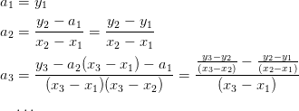.
Para encontrar o erro máximo, precisamos estimar
e
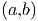
O
polinômio de grau três tem um mínimo (negativo) em
e um máximo (positivo) em . Logo:
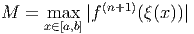
Portanto:
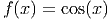
Para encontrar o erro efetivo máximo, basta encontrar o máximo de
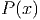. O mínimo (negativo) de 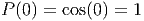 acontece em
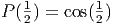 e o máximo (positivo) acontece em . Portanto,
o erro máximo efetivo é .
Exemplo 6.4.2. Considere o problema de aproximar o valor da integral
pelo valor da integral do polinômio que coincide com
nos pontos , e . Use a fórmula de Lagrange
para encontrar . Obtenha o valor de e encontre uma
expressão para o erro de truncamento.
O polinômio interpolador de é
e a integral de é:
Para fazer a estimativa de erro usando o Teorema 6.4.1, e temos
Lembramos que .
Observação 6.4.1.Existem estimativas melhores para o erro de
truncamento para este esquema de integração numérica. Veremos com mais
detalhes tais esquemas na teoria de integração numérica.
Exemplo 6.4.3.Use o resultado do exemplo anterior para aproximar o valor
das seguintes integrais:
a)
b)
Solução. Usando a fórmula obtida, temos que
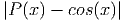
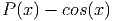
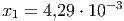
Exercícios
E 6.4.1.Use as mesmas técnicas usadas o resultado do Exemplo 6.4.2 para obter
uma aproximação do valor de:
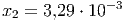
através do polinômio interpolador que coincide com 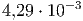 nos pontos 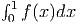 e
.
 pontos distintos,
pontos distintos,  , dentro
de um intervalo
, dentro
de um intervalo ![[a,b]](main2846x.png) e uma função
e uma função  com
com  derivadas contínuas
nesse intervalo (
derivadas contínuas
nesse intervalo (![f ∈ Cn+1 [a,b]](main2849x.png) ), então para cada
), então para cada  em
em ![[a,b]](main2851x.png) , existe um
número
, existe um
número  em
em  tal que
tal que

 é o polinômio interpolador. Em especial, pode-se dizer que
é o polinômio interpolador. Em especial, pode-se dizer que

![M = max |f(n+1)(ξ(x))|
x∈[a,b]](main2857x.png)
 e o polinômio
e o polinômio  de grau 2 tal que
de grau 2 tal que  ,
,  e
e  . Use
a fórmula de Lagrange para encontrar
. Use
a fórmula de Lagrange para encontrar  . Encontre o erro máximo que
se assume ao aproximar o valor de
. Encontre o erro máximo que
se assume ao aproximar o valor de  pelo de
pelo de  no intervalo
no intervalo ![[0,1]](main2866x.png) .
Trace os gráficos de
.
Trace os gráficos de  e
e  no intervalo
no intervalo ![[0,1]](main2869x.png) no mesmo plano
cartesiano e, depois, trace o gráfico da diferença
no mesmo plano
cartesiano e, depois, trace o gráfico da diferença  . Encontre
o erro efetivo máximo 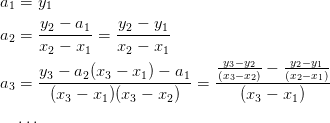.
. Encontre
o erro efetivo máximo 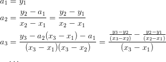.

 e
e
 tem um mínimo (negativo) em
tem um mínimo (negativo) em
 e um máximo (positivo) em
e um máximo (positivo) em  . Logo:
. Logo:
 . Portanto,
o erro máximo efetivo é
. Portanto,
o erro máximo efetivo é  .
.
 pelo valor da integral do polinômio
pelo valor da integral do polinômio  que coincide com
que coincide com
 nos pontos
nos pontos  ,
,  e
e  . Use a fórmula de Lagrange
para encontrar
. Use a fórmula de Lagrange
para encontrar  . Obtenha o valor de
. Obtenha o valor de  e encontre uma
expressão para o erro de truncamento.
e encontre uma
expressão para o erro de truncamento.
 é
é 
 é:
é: ![∫ 1 [ ( 2 3 )]1 [ (1 )( 4 ) ]1
P (x )dx = f(0) -x3 − --x2 + x + f -- − -x3 + 2x2
0 [ ( 3 2 )] 0 2 3 0
2-3 1- 2 1
+ f(1) 3x − 2 x 0
( 2 3 ) ( 1) ( 4 ) ( 2 1 )
= f(0) --− --+ 1 + f -- − --+ 2 + f(1) --− --
3 2( ) 2 3 3 2
1- 2- 1- 1-
= 6f(0) + 3 f 2 + 6f(1)](main2896x.png)
![| | | |
||∫ 1 ∫ 1 || ||∫ 1 ||
| 0 f(x )dx − 0 P (x )dx| = | 0 f(x ) − P (x)dx|
∫ 1
≤ |f(x ) − P (x)|dx
0 ∫ | ( ) |
M-- 1 || 1- ||
≤ 6 0 |x x − 2 (x − 1)|dx
M [ ∫ 1∕2 ( 1)
= --- x x − -- (x − 1)dx
6 0 2
∫ 1 ( 1) ]
− x x − -- (x − 1)dx
1∕2[ ( 2 )]
M-- 1-- -1- -M--
= 6 64 − − 64 = 192 .](main2897x.png)
![′′′
M = maxx ∈[0,1]|f (x)|](main2898x.png) .
.


 .
.